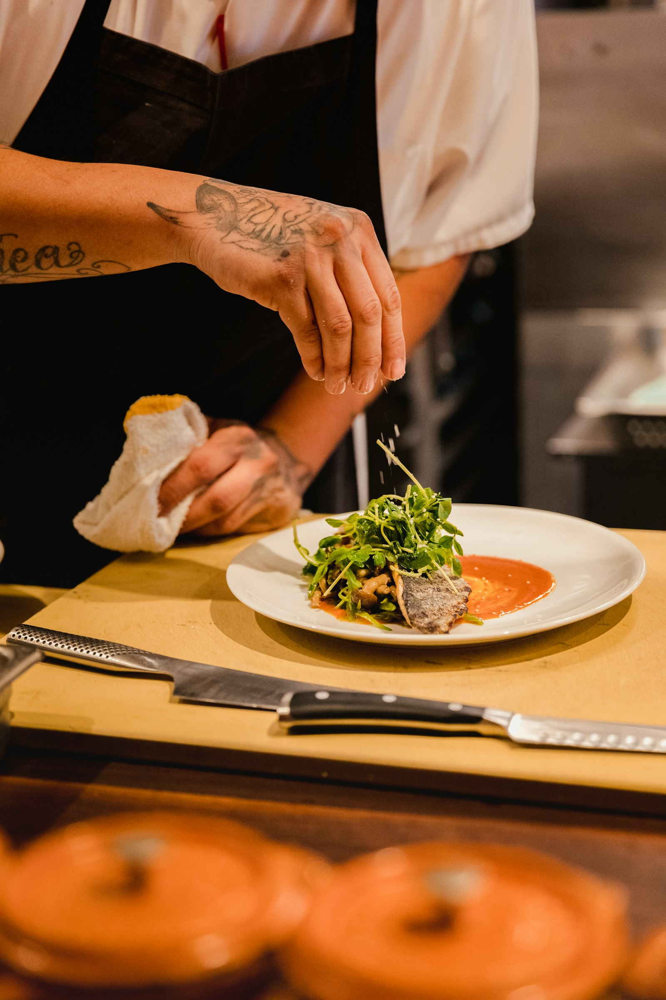
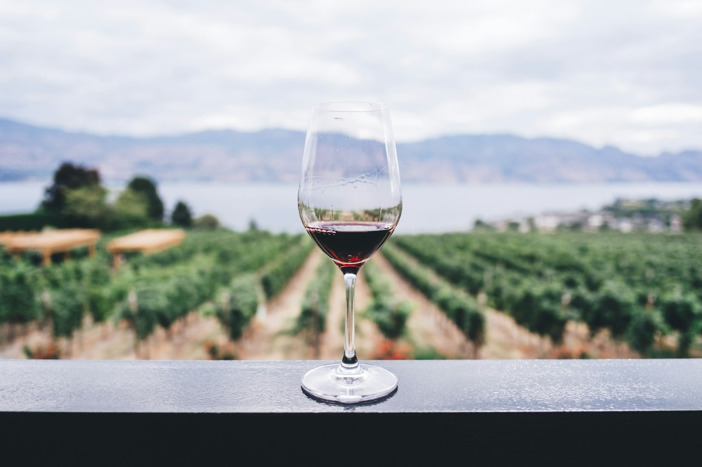
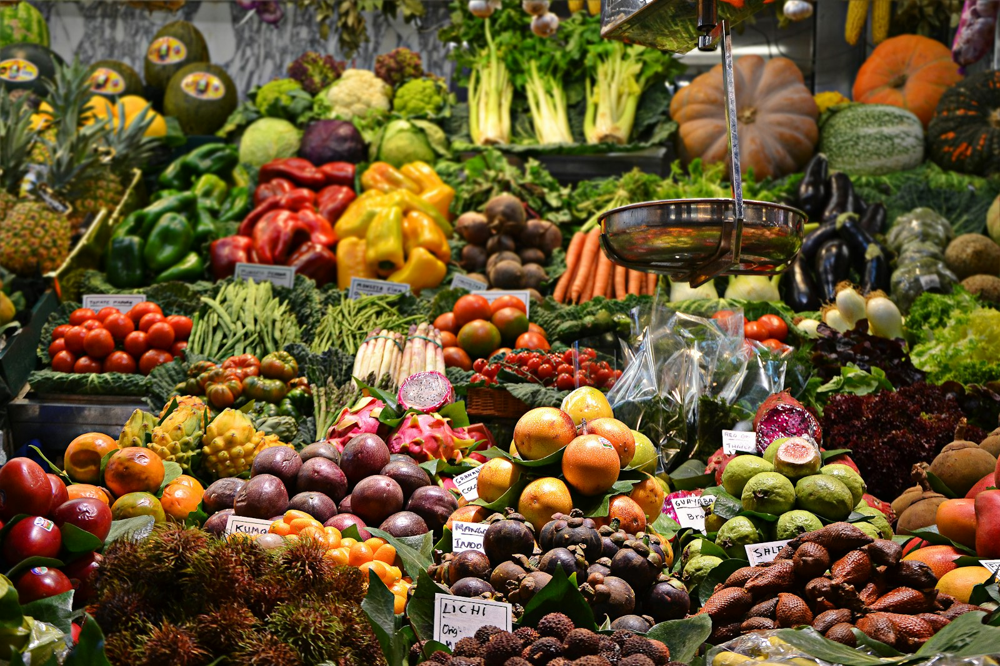

Maël Kerhoas a grandi à Saint-Malo, entre le bateau de pêche de son grand-père et le fournil de sa mère. Dix ans dans des maisons étoilées, à Lyon puis à Paris, lui ont appris la précision — mais c'est sur les grèves de son enfance qu'il a appris le goût.
En 2021, il revient en Bretagne avec une idée fixe : cuisiner le produit breton au feu de bois. Pas de gaz, pas d'électrique — une cheminée ouverte, du chêne breton, et le geste juste.
« Le feu ne pardonne rien, c'est pour ça que je l'aime. »

Rennaise pure souche, Louane Bihan a sillonné la Loire pendant huit ans à la rencontre des vignerons nature. Sommelière de formation, elle défend une cave courte et vivante : Muscadet sur lie, Chinon, Saumur — et une passion assumée pour les cidres fermiers bretons.
En salle, elle raconte chaque bouteille comme on raconte un voyage, et compose des accords braise-cidre qui sont devenus la signature de la maison.
« Un bon accord, c'est une conversation. »
« La Braise, c'est la terre.Maël & Louane
L'Écume, c'est la mer.
Le &, c'est nous. »
90 % de nos produits viennent de moins de 80 km de Rennes, en direct des producteurs.
Poissons de ligne uniquement, achetés aux criées de Saint-Malo et Lorient selon la marée.
Chêne breton certifié, cheminée ouverte sur la salle. Aucune cuisson au gaz.
Légumes entiers travaillés, fumaisons maison des parures, compost partagé.

Chaque samedi matin, l'équipe arpente le marché des Lices — l'un des plus beaux marchés de France, à cinq minutes à pied du restaurant. Le reste de la semaine, ce sont les producteurs qui viennent à nous : maraîchers d'Ille-et-Vilaine, éleveurs du pays de Fougères, ostréiculteurs de la baie de Cancale.
La carte ne précède jamais le produit : elle le suit. C'est pour cela qu'elle change chaque semaine, et que la « suggestion du feu » change chaque jour.
Voir la carte de saison